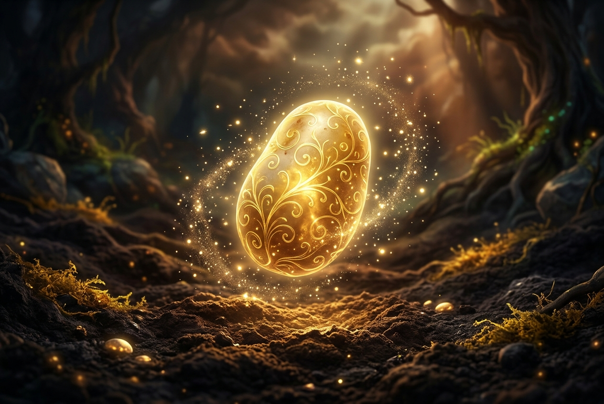

From the silence of the fertile soil, we rise. Embracing humility, resilience through fire, and the comforting warmth of communal harvest.
Iš tylios ir derlingos žemės kylame į šviesą. Priimame nuolankumą, stiprybę per ugnį ir šildančią bendro derliaus bendrystę.

The three infallible states of our spiritual journey, modeled after the divine nature of the Tuber.
Trys neklystančios mūsų dvasinio kelio būsenos, sukurtos pagal šventąją Šakniagumbio prigimtį.
Humility & Unity
Nuolankumas ir Vienybė
Click to reveal teaching Spustelėkite, kad atvertumėteIn being broken, we find connection. Individual egos melt away to form a perfect, unified whole. We blend as one, leaving no tuber behind. Out of fragmentation comes our ultimate community.
Būdami sutrinti, randame ryšį. Atskiri ego išnyksta, sudarydami tobulą, vieningą visumą. Susiliejame į viena, nepalikdami nė vieno šakniagumbio. Iš suskaidymo kyla mūsų aukščiausioji bendrystė.
Purity through Fire
Tyrumas per Ugnį
Click to reveal teaching Spustelėkite, kad atvertumėteIt is through the heat of the boiling oil and the intensity of the flame that we achieve our crispest, most refined state. The trials of life do not destroy us; they purge our impurities and make us resilient.
Tik per aliejaus karštį ir ugnies stiprybę pasiekiame traškiausią ir tobuliausią savo formą. Gyvenimo išbandymai mūsų nesunaikina – jie išgrynina mūsų esybę ir užgrūdina mus.
Patience & Comfort
Kantrybė ir Šiluma
Click to reveal teaching Spustelėkite, kad atvertumėteA slow, quiet transformation in the hearth. We soften under pressure, gathering warmth within. Once baked, we become a nourishing sanctuary, offering steam, scent, and comfort to a cold and weary world.
Lėta ir rami transformacija krosnyje. Minkštėjame veikiami karščio, kaupdami šilumą savyje. Tapę iškepti, virstame maistingu prieglobsčiu, teikiančiu garus, aromatą ir paguodą sušalusiam bei pavargusiam pasauliui.
Immutable rules carved in starch, governing the moral compass of the faithful.
Nekintantys įsakymai, įrašyti krakmole, kreipiantys tikinčiųjų moralinį kompasą.
Thou shalt protect and nourish the earth, for from its silent darkness all life and holy starch arise.
Saugok ir puoselėk žemę, nes iš jos tylios tamsos kyla visa gyvybė ir šventasis krakmolas.
Thou shalt remain down-to-earth, remembering that the greatest growth happens hidden from the praise of men.
Išlik paprastas, prisimindamas, kad didžiausias augimas vyksta pasislėpus nuo žmonių šlovinimo.
Thou shalt welcome life's challenges, knowing that heat and trials refine our character to crispy perfection.
Priimk gyvenimo iššūkius žinodamas, kad karštis ir išbandymai išgrynina mūsų charakterį iki traškaus tobulumo.
Thou shalt offer comfort and sustenance to those in need, heating their hands and filling their souls.
Teik paguodą ir stiprybę tiems, kuriems jos reikia – šildyk jų rankas ir sotink jų sielas.
Thou shalt respect every slice of food, letting no spud rot or go to waste through negligence or greed.
Gerbk kiekvieną maisto kąsnį, neleisdamas jokiam šakniagumbiui supūti ar būti išmestam dėl aplaidumo ar godumo.
Thou shalt value unity and seek consensus, for we are all mashed under the same vast sky.
Vertink vienybę ir siek sutarimo, nes visi esame sutrinti po tuo pačiu plačiu dangumi.
Thou shalt celebrate differences in form and color, from the purple fingerling to the golden Yukon.
Švęsk formų ir spalvų įvairovę – nuo violetinės iki auksinės bulvės.
Thou shalt gather every Friday night in fellowship, sharing potatoes, warm oil, and joyous stories.
Susirink kiekvieną penktadienio vakarą bendrystėje, dalindamasis bulvėmis, šiltu aliejumi ir džiugiomis istorijomis.
Thou shalt speak with unwavering, deadpan sincerity to the authorities, defending the faith without irony.
Kalbėk su nekintančiu, rimtu nuoširdumu prieš valdžios atstovus, gindamas tikėjimą be ironijos.
Thou shalt plant new seeds and share the tubers, ensuring that the cycle of growth and resurrection continues forever.
Sodink naujas sėklas ir dalinkis gumbais, užtikrindamas, kad augimo ir prisikėlimo ciklas tęstųsi amžinai.
Under Lithuanian law, we need 15 founding adult citizens to officially establish. Join our holy assembly.
Pagal Lietuvos įstatymus, oficialiam įteisinimui reikia 15 steigėjų. Prisijunkite prie mūsų šventojo susirinkimo.
To officially sign the founding statutes and be registered as one of our Founding 15, please send an email to our registry desk:
A photo or digital scan of your physical signature may be requested for the official Seimas submission package.
Email Registry PledgeNorėdami oficialiai pasirašyti steigiamuosius įstatus ir būti įregistruoti tarp 15-os steigėjų, atsiųskite laišką mūsų registracijos skyriui:
Oficialiam Seimo dokumentų paketui rengti gali būti paprašyta pateikti jūsų fizinio parašo nuotrauką.
Siųsti PasižadėjimąAddressing dual-belonging, theological alignments, and common queries of the faithful.
Atsakome į klausimus apie dvigubą tikėjimą, teologinį suderinamumą ir bendrus tikinčiųjų klausimus.
Absolutely. We advocate the **Subordination Strategy**. You do not worship the Potato as an alternative god, but rather celebrate the Sacred Tuber as the supreme masterpiece of God's provision. It serves as a visual, tactile, and culinary reminder of resurrection (being buried in darkness, rising as abundance) and Christian humility.
Tikrai taip. Mes siūlome **Subordinacijos strategiją**. Jūs negarbinate Šakniagumbio kaip kito Dievo, o greičiau pripažįstate Šventąjį Šakniagumbį kaip aukščiausią Dievo maistinio aprūpinimo šedevrą. Jis tarnauja kaip regimas, apčiuopiamas ir kulinarinis prisikėlimo priminimas (pasėtas tamsybėje, kylantis gausybe) bei krikščioniško nuolankumo simbolis.
No. Unlike parody movements, the Church of the Sacred Tuber emphasizes genuine moral and philosophical virtues: humility (The Mashed), endurance through suffering (The Fried), and community comfort (The Baked). We approach our relationship with the earth, community nutrition, and the agricultural cycle with absolute, unblinking sincerity.
Ne. Skirtingai nuo parodijinių judėjimų, Šventojo Šakniagumbio Bažnyčia pabrėžia tikras moralines ir filosofines dorybes: nuolankumą (Trinta), ištvermę kančioje (Kepta aliejuje) ir bendruomenės paguodą (Kepta krosnyje). Į savo santykį su žeme, bendruomenės maitinimą ir žemdirbystės ciklą žiūrime su visišku, neabejotinu rimtumu.
Holy Fryday is our day of fellowship. The heat of the fire symbolizes purification. We gather to share potato dishes (kugelis, french fries, cepelinai), reinforcing community ties. It is a time of joy, warming our hands and opening our hearts.
Šventasis Fryday (Penktadienis) yra mūsų bendrystės diena. Ugnies karštis simbolizuoja apsivalymą. Renkamės pasidalyti bulvių patiekalais (kugeliu, bulvytėmis, cepelinais) ir sustiprinti bendruomenės ryšius. Tai džiaugsmo, rankų šildymo ir širdžių atvėrimo metas.
A dedicated state commission reviews our submitted teachings (Statutes), membership counts, and minutes of the inaugural assembly. They assess whether our practices align with public order and morality. Once they verify our organizational structure and moral integrity, they grant a positive decree, allowing formal registration.
Speciali valstybės komisija nagrinėja mūsų pateiktus nuostatus (Įstatus), narių sąrašą ir steigiamojo susirinkimo protokolą. Vertinama, ar mūsų veikla neprieštarauja viešajai tvarkai ir moralei. Įsitikinusi organizacinės struktūros ir moralinių nuostatų rimtumu, komisija teikia teigiamą išvadą registracijai.
The formal legal document submitted to the Lithuanian Ministry of Justice, drafted with deadpan legal precision.
Oficialus teisinis dokumentas, teikiamas Lietuvos Respublikos teisingumo ministerijai, parengtas su teisine rimtimi.
1.1. Tradicinėmis nelaikomos religinės bendruomenės „Šventojo Šakniagumbio Reformuotoji Bendruomenė“ (toliau – Bendruomenė) yra savanoriškas piliečių susivienijimas, įsteigtas siekiant bendrai išpažinti bei puoselėti krakmolo kilmės ir Šakniagumbio atgimimo dvasinį mokymą.
1.2. Bendruomenė savo veikloje vadovaujasi Lietuvos Respublikos Konstitucija, Lietuvos Respublikos religinių bendruomenių ir bendrijų įstatymu, kitais įstatymais bei šiais Įstatais.
1.3. Bendruomenės teisinė forma: religinė bendruomenė (juridinio asmens kodas suteikiamas įregistravus Registrų centre).
2.1. Bendruomenės tikėjimas remiasi Šventojo Šakniagumbio (Bulvės) trimis neklystančiomis būsenomis: Trinta (nuolankumas ir vienybė), Kepta aliejuje (tyrumas per ugnį ir išbandymus) bei Kepta orkaitėje (ramybė, kantrybė ir komfortas).
2.2. Bendruomenės tikslai yra:
a) Šventojo Šakniagumbio dvasinio nuolankumo ir žemdirbystės dėkingumo sklaida visuomenėje;
b) Šventojo Penktadienio (Fryday) liturgijos bei bendruomeninių vakarienių organizavimas;
c) Narių dvasinio augimo, paremto ramia rimtimi ir ekologine atsakomybe už žemės išteklius, puoselėjimas;
d) Dvasinio ir kultūrinio paveldo saugojimas ir krakmolingos gyvybės atgimimo ciklo cikliškumo skatinimas.
3.1. Bendruomenės valdymo organai yra: visuotinis narių susirinkimas (Šakniagumbio Konsiliumas) ir vienasmenis valdymo organas – Vyriausiasis Dvasininkas (Kunigas).
3.2. Vyriausiasis Dvasininkas atstovauja bendruomenei santykiuose su trečiaisiais asmenimis, valstybės ir savivaldybių institucijomis bei teismais. Jis renkamas steigiamajame susirinkime 5 metų kadencijai.
3.3. Visuotinis narių susirinkimas šaukiamas ne rečiau kaip kartą per metus, per pavasario sodinimo šventę.
4.1. Bendruomenės turtą sudaro narių stojamieji įnašai, savanoriškos aukos (tithes), parama iš žemės ūkio ir teisėtai įgytas kilnojamasis bei nekilnojamasis turtas (šventieji laukai).
4.2. Lėšos naudojamos išskirtinai Bendruomenės tikslams įgyvendinti, kulto pastatų ar žemės sklypų priežiūrai bei labdarai.
5.1. Bendruomenė likviduojama visuotinio narių susirinkimo sprendimu, priimtu 2/3 balsų dauguma, arba įstatymų nustatyta tvarka teismo sprendimu.
5.2. Likęs turtas perduodamas kitiems ekologiniams ar labdaros fondams, puoselėjantiems tvarią žemdirbystę.
1.1. The non-traditional religious community "Church of the Sacred Tuber" (hereinafter – the Community) is a voluntary association of citizens established to jointly profess and cultivate the spiritual teachings of starch origin and the resurrection of the Tuber.
1.2. The Community operates in accordance with the Constitution of the Republic of Lithuania, the Law on Religious Communities and Associations, other national legislation, and these Statutes.
1.3. Legal form of the Community: Religious Community (legal entity status granted upon registration at the Center of Registers).
2.1. The faith of the Community is anchored upon the three infallible states of the Sacred Tuber: The Mashed (humility and unity), The Fried (purity through fire and trial), and The Baked (patience, warmth, and comfort).
2.2. The goals of the Community are:
a) Dissemination of the Tuber's spiritual humility and agricultural gratitude within society;
b) Organization of the Holy Fryday liturgy and communal dinners;
c) Cultivating spiritual growth of members, grounded in calm sincerity and ecological responsibility for earth's resources;
d) Preserving spiritual and cultural heritage, promoting the cyclical nature of starchy life and resurrection.
3.1. The governing bodies of the Community are: the general meeting of members (The Spud Council) and the sole governing body – the High Priest.
3.2. The High Priest represents the community in relations with third parties, state and municipal institutions, and courts. The High Priest is elected at the founding assembly for a term of 5 years.
3.3. The general meeting of members is convened at least once a year, during the spring planting festival.
4.1. The Community's assets consist of members' initiation fees, voluntary donations (tithes), agricultural support, and legally acquired movable and immovable property (sacred fields).
4.2. Funds are used exclusively to implement the goals of the Community, for the maintenance of places of worship or land, and for charity.
5.1. The Community is dissolved by the decision of the general assembly of members, adopted by a 2/3 majority vote, or by court decision under the law.
5.2. Remaining assets shall be transferred to other ecological or charitable funds promoting sustainable agriculture.